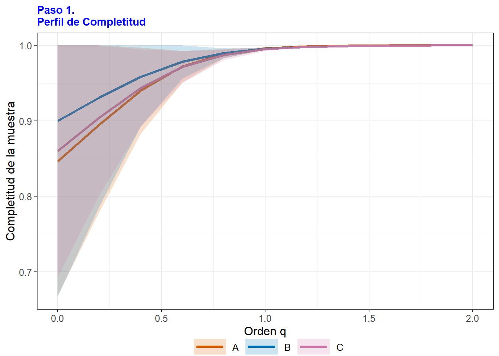
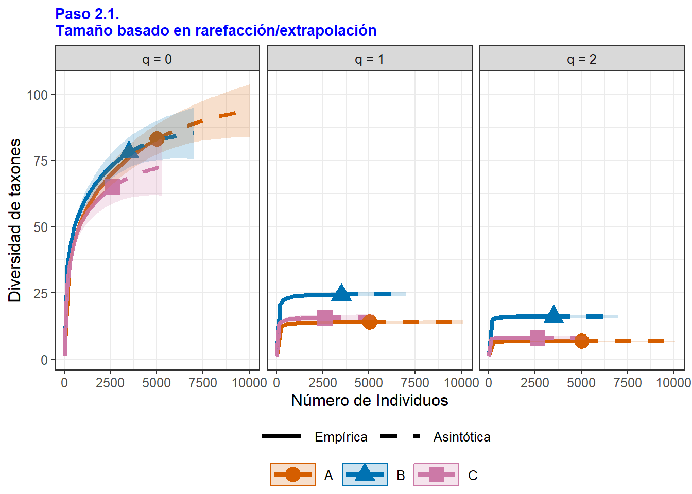
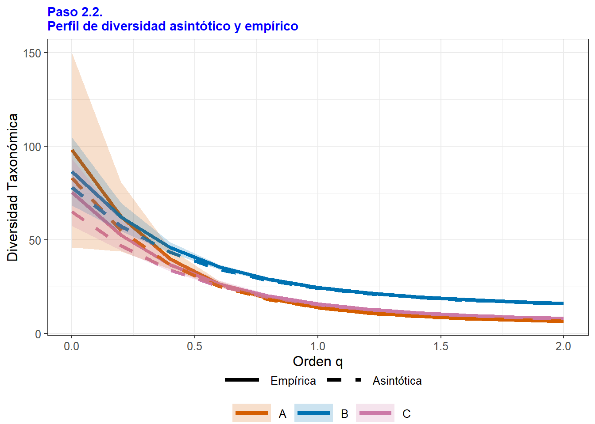

## install the latest version from github
# install.packages('devtools')
library(devtools)
# install_github('AnneChao/iNEXT.3D')
library(iNEXT.3D)
# install_github('AnneChao/iNEXT.4steps')
library(iNEXT.4steps)
# install.packages("iNEXT")
library(iNEXT)
library(httr)
# Librerías complementarias
library(datos)
library(tidyverse)
library(ggplot2)
# Librerías para editar las tablas
library(datos)
library(kableExtra)
library(knitr) Taller 7. Visualización de Comunidades Acuáticas
Aplicación de la plataforma iNEXT de 4 pasos para valorar la diversidad alfa
El presente taller, tiene por objeto, aprender a utilizar la plataforma iNEXT de cuatro pasos iNEXT.4steps, el cual consiste en la valoración de la diversidad en localidades o muestras. Este procedimiento permite calcular los siguientes cuatro insumos: (1) la completitud o integridad de la muestra, (2) la diversidad asintótica, (3) la diversidad no asintótica y (4) la uniformidad de las abundancias (Chao et al. 2020).
Hay una plataforma generada por Chao y colaboradores Enlace de la Plataforma, Enlace_manual_plataforma_en_línea

En este caso se trabajará con los comandos de R con el paquete iNEXT.4steps, para calcular los estimadores de diversidad Enlace de los comandos de R.
¿Qué es iNEXT? Herramienta que infiere sobre la diversidad esperada de uno o más lugares, a partir de datos observados (tabulados de campo), por medio de interpolación (iN) y de extrapolación (EXT) de los datos de cada muestra tomada en campo. Los detalles se muestran en el artículo de Chao et al. 2020 (enlace), especialmente la tabla 2 y la plataforma de iNEXT en 4 pasos (enlace), que aplica a lo mencionado en el artículo.
A continuación se describen los cuatro pasos para valorar la diversidad de una o varias muestras tomadas de comunidades:
• Paso 1: Perfil de completitud. Muestra que tan completa es la muestra evaluada dependiendo de que la pendiente de la curva (eje y) se aproxime a cero para los tres órdenes de diversidad (eje x). Normalmente esa pendiente se estabiliza en los órdenes q= 1 (especies frecuentes o dominantes registradas) y q= 2 (especies muy frecuentes). No sucede lo mismo con el orden q= 0 (número de especies) donde la pendiente es mayor lo cual indica que el esfuerzo debe aumentar.
• Paso 2: Rarefacción y extrapolación y perfil asintótico de diversidad. El primero hace relación a la proyección de los órdenes q= 0, q= 1 y q= 2 (línea punteada), hasta el doble de los individuos observados (eje x). Normalmente en q=0 la curva punteada no alcanza a estabilizarse (pendiente =0), lo cual impide una estimación precisa de la diversidad verdadera. En caso de que lo anterior se estime con precisión, el perfil asintótico permitirá reportar la diversidad no detectada (perfil estimado - empírico u observado), de lo contrario se debe analizar el siguiente paso.
• Paso 3. Perfil no asintótico. Se aplica estandarizando coberturas, para muestras en las que no se puede estimar la diversidad con precisión. Se extrae una fracción de la muestra de forma aleatoria. Entonces se analiza el nivel de diversidad (eje y), para una cobertura máxima que tienda a 1 (eje x).
• Paso 4. Perfil de uniformidad. Permite evaluar la uniformidad en las abundancias de las especies registradas por las muestras comparadas para una cobertura máxima. Allí se sugiere a la plataforma iNEXT en 4 pasos (enlace) para ejecutar todo el análisis.
Ejercicio. Base de datos de macroinvertebrados acuáticos, tomados del río Gaira.

Objetivo Realizar los cuatro pasos para la valoración de la diversidad de taxones presentes en los tres sitios en comparación (A: Tramo alto, B: Tramo Medio, C: Tramo Bajo del río). Para más detalles de esta base de datos, se puede consultar a Rodríguez-Barrios et. al (2011)
Cargar librerías
En caso de que las plataformas de iNEXT.3D, iNEXT.4steps y iNEXT no instalen correctamente, se recomienda instalar la versión de RTools compatible con versión de R que se esté utilizando.
Otra opción disponible es por medio de la la plataforma posit.cloud, la cual permite realizar en línea, los procedimientos descritos en el taller, solo se requiere registrarse y crear un proyecto en donde se puedan alojar los comandos de R.

El presente video es tomado del proyecto andea y muestra de una manera resumida, la forma de iniciar el trabajo en esta plataforma posit.cloud (anteriormente rstudio.clod) ver video. Realizar los pasos para cargar la base de datos, que para este caso es: datos.csv.
Cargar la base de datos (datos)
Esta base de datos será entregada por el docente, en el material correspondiente a la actividad de cómputo. Se utiliza el comando head(datos), para mostrar solo las seis primeras filas de la Tabla 1.
# Cargar la base de datos y asignarla como "datos"
datos <- read.csv2("datos.csv", row.names=1)
head(datos) # head permite mostrar solo 6 filas de la base de datos (datos).| A | B | C | |
|---|---|---|---|
| Simulium | 1586 | 323 | 99 |
| Chironominae | 901 | 451 | 756 |
| Orthocladinae | 473 | 54 | 79 |
| Baetodes | 346 | 248 | 42 |
| Diamesinae | 170 | 37 | 10 |
| Atopsyche | 159 | 18 | 1 |
Con el siguiente resumen estadístico - summary, se describen algunos insumos estadísticos en la abundancia para cada sitio evaluado (Tabla 2).
# Comparación de estadísticos de las muestras evaluadas (A, B y C)
summary(datos)| A | B | C | |
|---|---|---|---|
| Min. : 0.00 | Min. : 0.00 | Min. : 0.0 | |
| 1st Qu.: 1.00 | 1st Qu.: 0.00 | 1st Qu.: 0.0 | |
| Median : 2.00 | Median : 2.00 | Median : 1.0 | |
| Mean : 47.05 | Mean : 32.72 | Mean : 24.6 | |
| 3rd Qu.: 18.50 | 3rd Qu.: 18.50 | 3rd Qu.: 10.0 | |
| Max. :1586.00 | Max. :451.00 | Max. :756.0 |
Cuatro pasos para valorar la diversidad de los sitios en comparación
Resumen tabular de los cuatro pasos
A continuación se calcula la diversidad alfa en 4 pasos, de acuerdo a la propuesta de Chao et al. (2020). Este procedimiento puede tardar algunos minutos y dependerá de la velocidad de conexión a internet y al tamaño de la base de datos evaluada. diversity = "TD" corresponde a la diversidad taxonómica calculada. El comando names(result1), muestra a los diferentes insumos del análisis.
- Resultados resumidos. El comando
result1$summary, permite mostrar a todos los insumos tabulares de los 4 pasos del análisis de divversidad. Este análisis puede demorar algunos minutos, dependiendo del tamaño de la base de datos que se esté utilizando. Para este caso, no se mostrarán los insumos de este comendo, debido a que se describe cada uno de ellos a continuación.
# Insumos tabulares de la diversidad en 4 pasos
result1 <- iNEXT4steps(data = datos, diversity = "TD", datatype = "abundance")
result1$summaryLos cuatro pasos de este análisis se detallan a continuación.
- Paso 1. $
STEP1. Sample completeness profilesPerfil de completitud. En la Tabla 3, se muestra que tan completa es cada muestra evaluada para los órdenesq= 0(riqueza),q= 1(especies frecuentes o abundantes),q= 2(especies muy frecuentes o dominantes). Normalmenteq=0es de menor completitud (muestra insuficiente) debido a losf1(cantidad de singletons), entre otros factores.
# Paso 1. Perfil de completitud
library(datos)
paso1 <- result1$summary$"STEP1. Sample completeness profiles"
colnames(paso1) <- c("Tramo", "q = 0", "q = 1", "q = 2")
paso1| Tramo | q = 0 | q = 1 | q = 2 |
|---|---|---|---|
| A | 0.85 | 1 | 1 |
| B | 0.90 | 1 | 1 |
| C | 0.86 | 1 | 1 |
Para este caso, solo q = 0 presenta una proporción < 1, los cual puede indicar que si se aumenta el esfuerzo de muestreo o el tamaño de la muestra, pueden encontrarse nuevos taxones.
- Paso 2. $
STEP2. Asymptotic analysisPerfil asintótico. En la Tabla 4, se muestra la diversidad proyectada (estimada) asumiendo que las muestras tienen tamaño suficiente (coberturas superiores a 0.9),q= 0(riqueza),q= 1(especies frecuentes o diversidad de Shannon),q= 2(especies muy frecuentes o diversidad de Simpson).
# Paso 2. Perfil Asintótico
paso2 <- result1$summary$"STEP2. Asymptotic analysis"
colnames(paso2) <- c("Tramo", "Diversidad", "Observada", "Estimada", "e.e.", "LCI", "LCS")
paso2| Tramo | Diversidad | Observada | Estimada | e.e. | LCI | LCS |
|---|---|---|---|---|---|---|
| A | Species richness | 83.00 | 98.04 | 10.57 | 83.00 | 118.76 |
| A | Shannon diversity | 13.91 | 14.05 | 0.35 | 13.37 | 14.74 |
| A | Simpson diversity | 6.66 | 6.66 | 0.17 | 6.33 | 7.00 |
| B | Species richness | 78.00 | 86.65 | 8.72 | 78.00 | 103.74 |
| B | Shannon diversity | 24.31 | 24.64 | 0.52 | 23.62 | 25.65 |
| B | Simpson diversity | 16.03 | 16.10 | 0.38 | 15.36 | 16.83 |
| C | Species richness | 65.00 | 75.56 | 10.66 | 65.00 | 96.46 |
| C | Shannon diversity | 15.56 | 15.80 | 0.43 | 14.96 | 16.65 |
| C | Simpson diversity | 7.97 | 7.99 | 0.26 | 7.48 | 8.50 |
La diferencia entre la diversidad estimada y la observada define al número de especies o taxones faltantes (no detectados). s.e. y LCL, son los errores estándar y los límites de confianza, respectivamente, para las proyecciones gráficas que se definen a continuación.
- Paso 3. $
STEP3. Non-asymptotic coverage-based rarefaction and extrapolation analysisPerfil no asintótico basado en interpolación y extrapolación. En la Tabla 5, se presenta la cobertura (eje x) obtenida de una muestra aleatoria, extrapolada para aumentar su representación (Cmax).Este paso es apropiado cuando hay demasiados tazones no detectados o faltantes y la diversidad no se puede calcular con precisión.
# Paso 3. Perfil no asintótico basado en interpolación y extrapolación
paso3 <- result1$summary$"STEP3. Non-asymptotic coverage-based rarefaction and extrapolation analysis"
paso3| Cmax = 0.999 | q = 0 | q = 1 | q = 2 |
|---|---|---|---|
| A | 92.29 | 13.98 | 6.66 |
| B | 83.74 | 24.47 | 16.06 |
| C | 72.48 | 15.71 | 7.98 |
Para este caso, el número de taxones de la muestra aleatoria q = 0, está entre 72 y 92. El número de taxones frecuentes q = 1 se encuentra entre 14 y 25 y el número de taxones muy frecuentes q = 2, está entre 7 y 16.
- Paso 4. $
STEP4. Evenness among species abundancesPerfil de uniformidad. Permite evaluar la uniformidad en las abundancias de los taxones por las muestras comparadas para una cobertura máxima. Sirve para comprar entre el patrón de uniformidad en las abundancias de los taxones para los dos lugares evaluados (Tabla 6).
La Uniformidad (Evenness) se calcula mediante el índice de Piellou (J’), donde: J' = H/log(S), donde H denota la diversidad de Shannon y S es el número de taxones de la muestra.
# Paso 4. Perfil de uniformidad
paso4 <- result1$summary$"STEP4. Evenness among species abundances"
paso4| Pielou J' | q = 1 | q = 2 | |
|---|---|---|---|
| A | 0.58 | 0.14 | 0.06 |
| B | 0.72 | 0.28 | 0.18 |
| C | 0.64 | 0.21 | 0.10 |
El anterior insumo indica que la uniformidad de Pielou J' se mueve entre 58% y 64% (muestras poco uniformes en las abundancias de los taxones).
Insumos gráficos de los cuatro pasos
El comando figure[[6]] relaciona a las cinco figuras que resumen el proceso de los cuatro pasos para valorar la diversidad de los tres sitios evaluados, descritos por Chao et al. 2020.
# Figuras generadas por los cuatro pasos de la valoración de la diversidad.
result1$figure[[6]]Las figuras generadas se describen de forma individual en los siguientes comandos, permitiendo a su vez, editar los rótulos de sus ejes y los titulos de cada una, mejorando de esta forma su interpretación y presentación.
Figura del Paso 1. Completitud de las muestras
En la Figura 1, el comando result1$figure[[1]], se utiliza para graficar la integridad de cada muestra (tramos a, B y C), a través del perfil de completitud. Para este caso se observa Que la muestra más completa es la del tramo medio (B), debido a que presenta menos pendiente en q = 0 que el resto. Entonces, a mayor pendiente, menos completitud de las muestras. Al analizar el eje X (q = 0, 1 y 2) se observa que la menor completitud se presenta en el orden q = 0, lo cual indica que hay taxones no detectados en las tres muestras evaluadas. Para eliminar el titulo de la figura, se puede colocar el siguiente comando title = "".
# Figura del paso 1. Completitud de las muestras.
p <- result1$figure[[1]]
p+labs(x="Orden q", y="Completitud de la muestra",
title = "Paso 1. \nPerfil de Completitud")
Otra forma de hallar el perfil de completitud es mediante el comando Completeness. La siguiente figura del paso 2, se obtiene con el comando ggCompleteness descrito en el repositorio GitHub de iNEXT.4steps (R package)
# Perfil de completitud de las muestras
result2 <- Completeness(data = datos, datatype = "abundance")# Figura del perfil de completitud
p <- ggCompleteness(result2)
p+labs(x="Orden q", y="Completitud de la muestra",
title = "Paso 1. \nPerfil de Completitud") Figura del Paso 2. Perfil asintótico
Paso 2.1 Para la Figura 2, el comando result1$figure[[2]], permite graficar la “Diversidad asintótica” basada en rarefacción y extrapolación (paso 2.1). En este sentido la asintota de las curvas, se obtiene cuando por más que aumente la abundancia de individuos, no aumenta la diversidad (la curva se vuelve asintótica o con pendiente = 0). Estos perfiles son útiles para comparar la diversidad de muestras de diferentes tamaños y preferiblemente que sean grandes, lo cual no es el caso del presente ejercicio.
# Paso 2.1. Figura del tamaño basado en rarefacción / extrapolación
p <- result1$figure[[2]]
p + labs(x="Número de Individuos", y="Diversidad de taxones",
title = "Paso 2.1. \nTamaño basado en rarefacción/extrapolación") +
scale_linetype_manual("",values = c(1,2),labels=c("Empírica","Asintótica")) 
Para este caso, se observa que q = 0 (riqueza de taxones) no alcanza la asintota en ninguno de los tramos (líneas sólidas), tampoco al extrapolar la abundancia al doble de lo registrado (líneas punteadas), lo cual indica que se requiere aumentar el esfuerzo de muestreo o que los lugares tienen una elevada diversidad esperada. Otro aspecto es el solapamiento de las bandas de colores, que representan los valores de los límites de confianza, lo cual puede indicar que entre los tramos A y B no se esperan diferencias significativas de la riqueza de taxones (solapamiento importante de la bandas).
Con la librería iNEXT de R, también se puede realizar la figura anterior. Para mayores detalles de esta opción, se puede consultar al Manual_iNEXT y el procedimiento en esa plataforma se describe a continuación.
out=iNEXT(datos,q=c(0,1,2),datatype="abundance")
datos_plot = ggiNEXT(out, type=3, facet.var="Order.q")
datos_plot + labs(x = "Cobertura de la muestra", y = "Diversidad")Paso 2.2 El comando result1$figure[[3]], permite graficar la “Diversidad asintótica” basada en el comparativo entre la diversidad estimada (asintótica) y la onservada (empírica) de los tramos en comparación (paso 2.2). En la Figura 3, se muestra que entre más se aproximen estas curvas, se tendrá una mayor aproximación a la diversidad esperada. Al analizar la intersección de los ejes x, y, se observa que en el orden q = 0 (riqueza de taxones) es donde se alejan las curvas, lo cual se complementa con la figura anterior, para este estimador.
# Paso 2.2. Figura del perfil asintótico y empírico
p <- result1$figure[[3]]
p+labs(x="Orden q", y="Diversidad Taxonómica",
title = "Paso 2.2. \nPerfil de diversidad asintótico y empírico") +
scale_linetype_manual("",values = c(1,2),labels=c("Empírica","Asintótica"))
Figura del Paso 3. Perfil no asintótico basado en interpolación y extrapolación
El comando result1$figure[[3]], permite graficar la “Diversidad no asintótica” basada en curvas de rarefacción y de extrapolación, asumiendo tamaños de muestra insuficiente o de muestras pequeñas, mediante la extracción de una submuestra del total evaluado (Cmax). En la Figura 4, todas las curvas alcanzan la cobbertuura esperada (Cobertura = 1), lo cual vuelve consistente su comparación. Para este caso se observa que la mayor riqueza de taxones se presenta en el tramo medio o B (panel q =0) seguido de los tramos B y C, respectivamente. Para el caso de los taxones abundantes (q = 1) y muy abundantes (q = 2), la mayor diversidad se presenta en el tramo B.
# Paso 3. Figura del perfil no asintótico basado en rarefacción/extrapolación
p <- result1$figure[[4]]
p+labs(x="Cobertura de la muestra", y="Diversidad Taxonómica",
title = "Paso 3. \nPerfil de cobertura basada en rarefacción/extrapolación") +
scale_linetype_manual("",values = c(1,2),labels=c("Empírica","Asintótica")) Figura del Paso 4. Uniformidad de las muestras (tramos evaluados)
Este perfil (Figura 5), permite realizar un comparativo en la uniformidad de las muestras comparadas (tramos A, B y C), en los tres órdenes de diversidad (q = 0, 1 y 2), lo cual permite valorar la proporcionalidad de las abundancias para los diferentes taxones encontrados en cada lugar. Para este caso, a excepción del estimador q = 0 (en donde las tres curvas se unen), la mayor uniformidad se presenta en el tramo medio o B (curva de mayor magnitud y bandas de sus límites de confianza no se solapan con el resto), seguido de los tramos C y A, respectivamente.
# Paso 4. Figura del perfil de uniformidad
p <- result1$figure[[5]]
p+labs(x="Orden q", y="Uniformidad",
title = "Paso 4. \nPerfil de Uniformidad") Otra forma de calcular el perfil de uniformidad se realiza con el comando Evenness (Figura 6), de la librería iNEXT.4steps, en el cual, se relacionan cinco modelos de uniformidad (E1 a E5), desarrollados y descritos por Chao y Ricotta (2019). Ver tabla 1 y figura 2 del artículo.
# Cálculo de los cinco modelos de uniformidad
result3 <- Evenness(data = datos, datatype = "abundance")# Figura con los cinco modelos de uniformidad
p <- ggEvenness(result3)
p+labs(x="Orden q", y="Uniformidad",
title = "Paso 4. \nCinco Perfiles de Uniformidad") 
En la Figura 6 se observa que para los cinco modelos de uniformidad, el tramo A es el que presenta mayor uniformidad, seguido del C y el B, respectivamente. La mayor uniformidad del tramo A se presenta especialmente para los taxones dominantes (q = 1) y muy dominantes (q = 2) (ver los órdenes de diversidad en el eje x). En el modelo E4, los valores de uniformidad son casi iguales para los taxones dominantes y muy dominantes (q = 0, 1 y 2).
Fuente de los cálculos
Chao, A., Y. Kubota, D. Zelený, C.-H. Chiu, C.-F. Li, B. Kusumoto, M. Yasuhara, S. Thorn, C.-L. Wei, M. J. Costello, and R. K. Colwell (2020). Quantifying sample completeness and comparing diversities among assemblages. Ecological Research, 35, 292-314.